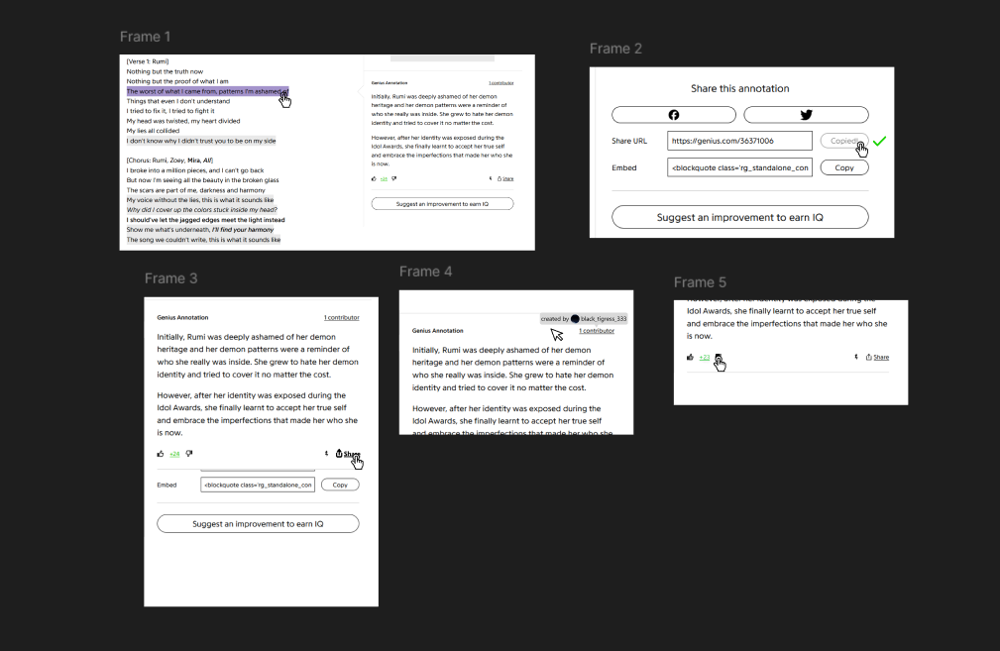
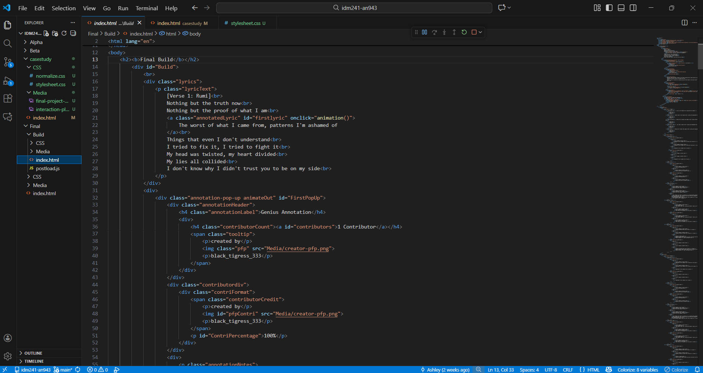
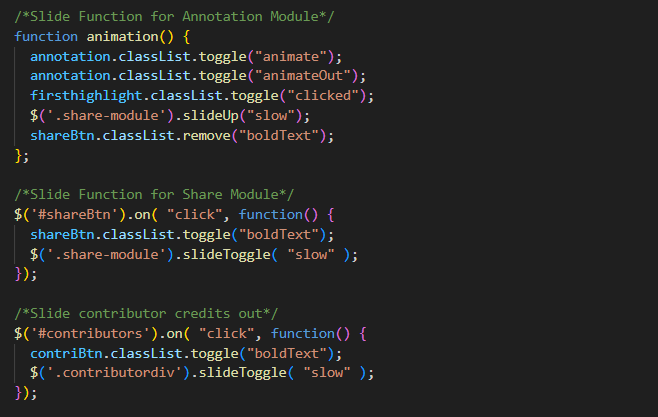
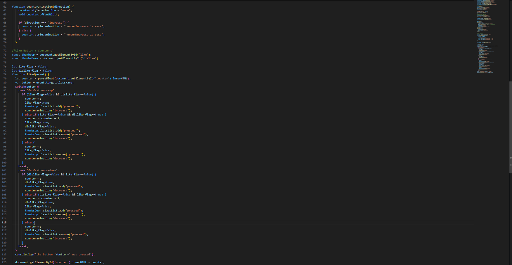
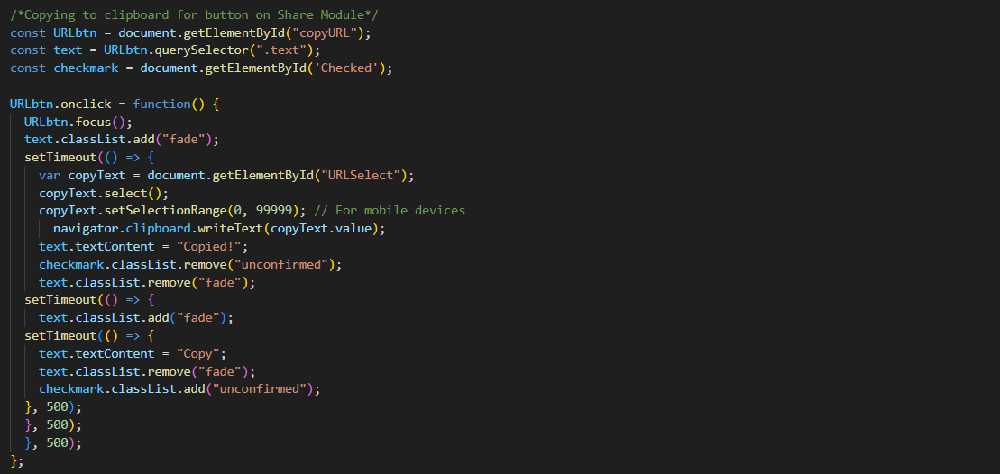

Genius is a popular website used to search up the lyrics for all kinds of songs. From K-pop to R&B, Genius allows people from all over the world to see the lyrics to their favorite songs. Using CSS and Javascript, the goal of this project was to add microinterations to parts of the Genius website as a way to improve their user experience. Specifically, the changes were focused on the interactions with the lyrics page and lyric annotations.
The original Genius website lacked animations and signifiers for most of their interactions. The only aspects that had any sort of indicators were the highlighted lyrics, the copy link button, and the share to social media button. Other than those interactions, all the other clickable elements just had a cursor change while hovering over them. I wanted to make it so using the website was less jarring for users. Given the time restraints, I focused on improving 6 different elements:
Each element on the above list will gain animations that will vastly improve the user experience.
First, I planned out what I wanted from certain aspects on the page. I took screenshots of the page and edited them to fit my vision for what I wanted to happen in place of the sudden changes that Genius originally had. I kept the already existing microinterations and added improvements through animation. For elements that had no microinteractions, I added visual indicators of their statuses for improved user experience.
Additionally, written descriptions of the interactions were created for each element. These descriptions describe the elements' triggers and actions that happens when the triggers occur. This allowed for a more details of how each interaction would play out that still images could not convey.
First, each element was created with HTML. Before adding any animations, I had to make sure each element looked the way it should and were labeled accordingly for styling and Javascript purposes. Afterwards, I added color and styled the page so that the elements matched the original Genius website. Using CSS, I also added animations to elements that didn't require additional actions. This includes elements that had hover states, such as the highlighted text and the contributor label.
Then, I moved onto elements that required functions and event listeners. These were elements that would change something on click, such as the share button and the like button. Using Javascript, coded the module animations, the copy link animation, and the like and dislike animation.
All the module animations had very similar code. For modules that slid up and down, such as the share module or the contributor module, I simple added set slideToggle on the divs with the information to trigger on click. As for the annotation module, which slides from left to right, I used CSS keyframes to make a slide in and slide out, attached them to class names, and coded it so that pressing the highlighted text would toggle the class names on and off the div with the annotation information.
The like and dislike buttons were coded somewhat similarly. However, instead of attaching the animations to class names and then toggling them on and off, I put the animations into a function that would trigger depending on the element's state. Then, I inserted this function into a larger function that would, on click, read which button was being pressed, the state all the buttons were in, change the number on the counter accordingly, add a class name that would make the hover state permanent, and trigger the counter animation.
As for the copy link button, it utilized a similar method to the module animations combined with the setTimeout function. To put simply, on click, the function would collect the link inside the form, activate a fade animation, change the text from "Copy" to "Copied!" for half a second, fade in a green checkmark, activate the fade animation again, and then returing the button to say "Copy" while fading out the green checkmark.
Below is a showcase of the final build. The annotation, contributor credits, and share module slides in and out smoothly, which is a vast improvement on the original which just appeared upon the user clicking the corresponding element. The fade effect for certain elements on hover also adds a nice interaction that allows the user to take in the information as it appears. The bouncing of the number for the amount of likes adds interest to the static number. Additionally, giving hover states to all the clickable elements helps users recognize them more clearly. Overall, this part of Genius's website is now less jarring and more user friendly.
You can
This project was a sucess. All 6 elements gained microinterations that improve the experience of using them. Whether it be a simple hover animation or a complicated changing of text, each element doesn't feel as harsh to use as it did before. Through this project, I also got to practice animating divs and learned a lot more about Javascript code. Now I understand a lot more about the limits of what Javascript can do.